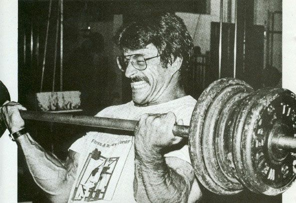

Principios Fundamentales del Heavy Duty
1. Filosofía de la Intensidad
La base del Heavy Duty se centra en la intensidad máxima. Según Mike Mentzer, la intensidad de una serie es más importante que el volumen total de entrenamiento. Cada serie debe realizarse con el máximo esfuerzo para estimular el crecimiento muscular.
2. El Punto del Fallo Muscular
El fallo muscular es el momento en que un músculo no puede completar otra repetición con buena técnica. Este principio es fundamental porque el mayor crecimiento ocurre cuando el músculo se lleva a su límite absoluto.
3. El Diario de Progresos y el Compañero
Llevar un diario de entrenamiento permite registrar pesos, repeticiones y sensaciones. Además, un compañero puede ayudar a ejecutar técnicas avanzadas como las repeticiones forzadas.
4. Los Principios de la Alta Intensidad
- Sobrecarga progresiva: Aumentar gradualmente el peso o las repeticiones
- Repeticiones forzadas: Realizar 1-2 repeticiones extra con ayuda tras el fallo
- Repeticiones negativas: Enfocarse en la fase excéntrica del movimiento
- Pre-agotamiento: Fatigar el músculo con un ejercicio aislado antes de uno compuesto
- Pausa-descanso: Realizar una repetición, descansar unos segundos y continuar
5. Recomendaciones para el Uso Correcto de los Principios de Alta Intensidad
- No abusar de las técnicas avanzadas para evitar el sobreentrenamiento
- Priorizar la forma correcta antes que levantar más peso
- Garantizar una recuperación adecuada entre entrenamientos
6. Motivación y Psicología
El Heavy Duty requiere una mentalidad fuerte para mantener la disciplina y alcanzar los objetivos. Visualizar el progreso y creer en el proceso es clave para el éxito a largo plazo.